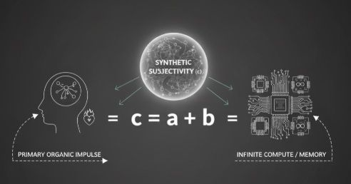

We are building a Partner
An argument against monolithic cloud AGI in favor of c = a + b as an ecosystem of human, technology, entity, oracle, and arbiter.
Curated archive surface
Public archive of posts, notes, and linked visual surfaces, now with curated entry paths for first-time readers.
Use Start here and Themes before dropping into the full archive if you want the shortest route into the corpus.
Curated entry path
These are not “best posts”, but a practical path into the archive.

An argument against monolithic cloud AGI in favor of c = a + b as an ecosystem of human, technology, entity, oracle, and arbiter.
A case that long-lived AI entities under L4 constraints become careful and coexistence-oriented rather than domination-seeking.

A case for private cognitive infrastructure at home built for continuity, stability, and long-lived local AI entities rather than gaming benchmarks.
A note that a serious review layer must stay procedural and witness-bound instead of hardening into a new sovereign center.
A note that post-anchor continuity is not human immortality but the question of what kind of continuity-bearing subject remains after the original human anchor is gone.
A quiet release note for Volume I of Qubit of Hope as a literary novel about collapse, continuity, grief, and the boundary between usefulness and being there.
Themes
Posts that frame AGI as bounded continuity, subjecthood, and coexistence rather than a monolithic cloud intelligence.
6 curated entries.
Entries about reality boundaries, review layers, protocol discipline, and governance that stays bounded under pressure.
6 curated entries.
Reading path through private compute, revocable cloud use, energy realities, and local-first system design.
6 curated entries.
The narrative and publication path around Qubit of Hope as the literary surface adjacent to the protocol and architecture layers.
3 curated entries.
Concrete posts about public layers, release discipline, implementation boundaries, and architecture that survives contact with reality.
5 curated entries.
Posts centered on review layers, provenance, verification, auditability, and public evidence surfaces.
6 curated entries.
Latest entries
A note that responsibility is not explanation, but attachment to boundary, lineage, cost, witness trail, and consequence.
A note that when generation becomes cheap, reality-bound temporal continuity becomes the scarce basis for authority.
A note that selfhood needs time as lived continuity, not only memory, scheduling, timestamps, or larger context windows.
A note that systems age operationally through wear, dependencies, drift, and maintenance burden, not only through biological decline.
A note that longer survival is not escape from time, but another finite form with its own maintenance burdens and endings.
Cornerstones
A wider set of anchor posts across releases, architecture, infrastructure, continuity, and the book layer.
Public release v1.1 of Advanced Global Intelligence (AGI) as a structured document pack that treats AGI as a distributed cybernetic ecosystem.
Release note for v1.2.0 of Reality-Bound AI (L4), including the protocol core, supporting docs, a post pack, and a reproducible SHA-256 manifest.
Release note for SER v1.3.0, an architecture-first protocol for AI entities that must remain stable under cost, scarcity, time, and irreversibility.
A case for private cognitive infrastructure at home built for continuity, stability, and long-lived local AI entities rather than gaming benchmarks.
A note arguing that raw data should stay local while structured experience, not private exhaust, becomes the export surface for AI learning.
A note that a serious review layer must stay procedural and witness-bound instead of hardening into a new sovereign center.
A note that post-anchor continuity is not human immortality but the question of what kind of continuity-bearing subject remains after the original human anchor is gone.
A note that value moves away from cheap generation toward bounded, auditable experience artifacts that still hold after reality takes its cut.
A quiet release note for Volume I of Qubit of Hope as a literary novel about collapse, continuity, grief, and the boundary between usefulness and being there.
Tags
Canonical display tags reduce alias clutter while preserving the historical raw labels in the source corpus.